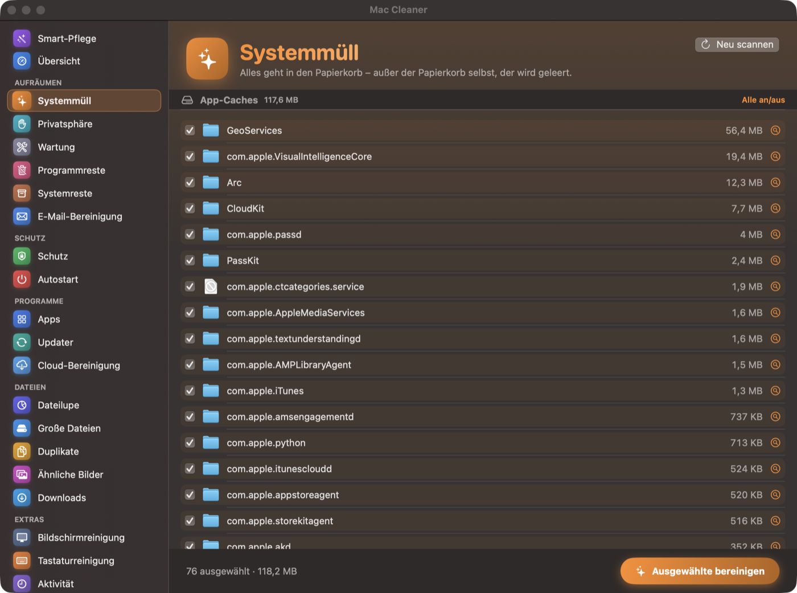
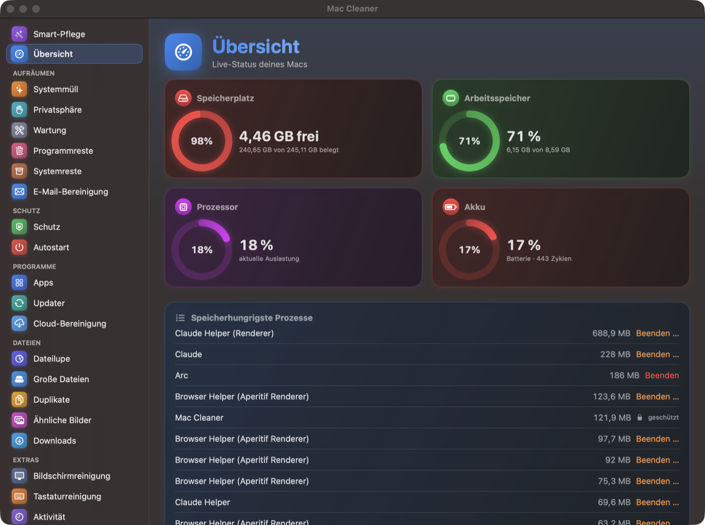

Dein Mac. Aufgeräumt. Einmal bezahlt.
Mac Cleaner schafft Speicherplatz, findet Duplikate und Dateien-Riesen, entfernt Programmreste und räumt dein Postfach auf. Du zahlst einmal und hast die App für immer.
Für macOS 14 oder neuer, Apple Silicon. Läuft komplett auf deinem Mac.

Alles, was dein Mac zum Aufräumen braucht
Keine Zusatzkäufe, keine Pakete. Alle Funktionen sind in der App, und du entscheidest bei jedem Schritt selbst, was verschwindet.
Systemmüll
Zwischenspeicher, Protokolle, Mail-Anhänge, Xcode-Reste, Reste von KI-Tools und Papierkörbe, einzeln auswählbar.
Große Dateien und Duplikate
Findet, was viel Platz belegt, und doppelte Dateien. Die älteste Kopie bleibt standardmäßig erhalten.
Ähnliche Bilder
Erkennt fast gleiche Fotos, damit du nur die besten behältst.
Programme sauber entfernen
Deinstalliert Apps samt Restdateien und findet Überbleibsel längst gelöschter Programme.
E-Mail-Bereinigung
Zeigt Absender mit vielen Mails, erkennt Newsletter und führt dich zum Abbestellen. Gelöscht wird nur in den Mail-Papierkorb.
Cloud-Bereinigung
Entfernt lokale Kopien großer iCloud-Dateien. Sie bleiben online und laden bei Bedarf neu.
Sicherheitscheck
Prüft Systemschutz, Programme, Autostart, laufende Prozesse und Browser-Erweiterungen auf typische Warnzeichen. Alles mit Bordmitteln von macOS, lokal auf deinem Mac.
Privatsphäre
Räumt Browser-Verläufe, Cookies und Spuren in Safari, Chrome, Firefox und anderen auf.
Wartung und Autostart
DNS, Spotlight, Quick-Look-Cache und mehr, dazu Anmeldeobjekte und Launch Agents im Griff.
Dateilupe und Übersicht
Siehst du auf einen Blick, wo dein Speicher bleibt, dazu Live-Anzeige für RAM, Prozessor und Akku.
Winzig klein
Nur etwa 3 MB groß, ohne Ballast. Der Download dauert Sekunden, und die App schont genau den Speicher, den sie dir freiräumen will.
Tastatur und Bildschirm putzen
Sperrt Tastatur oder Bildschirm für ein paar Minuten, damit du in Ruhe wischen kannst.
So sieht Mac Cleaner aus
Echte Screenshots aus der App. Aufgeräumt, übersichtlich und auf Deutsch.

Löschen mit Sicherheitsgurt
Aufräumen darf nicht wehtun. Deshalb hat Mac Cleaner Schutzsysteme eingebaut, arbeitet vorsichtig und sagt dir ehrlich, was die App nicht kann.
Einmal zahlen. Behalten.
Abos nerven. Deshalb kostet Mac Cleaner einen festen Betrag, ohne Konto und ohne Verlängerung. Wer jetzt als Tester einsteigt, bekommt alle künftigen Versionen geschenkt.
Die Anmeldung als Tester ist unverbindlich. Bezahlt wird erst, wenn der Verkauf startet. Die Preise sind bis dahin ein Vorschlag und noch nicht final.
- Einmal zahlen, kein Abo, keine Verlängerung
- Alle künftigen Versionen kostenlos: Version 3, 4, 5 und weitere
- Gilt für alle, die sich vor dem Verkaufsstart als Tester melden
- Kein Konto, keine Cloud, läuft lokal auf deinem Mac
- Alle Updates der Version 2 inklusive
- Upgrade auf Version 3 für 4,99 €
- Kein Abo, alle Funktionen in der App
So funktioniert deine Lizenz
Nach dem Kauf bekommst du einen Lizenzschlüssel. Den trägst du einmal in der App ein, danach läuft sie ohne Konto und ohne Internet. Welche Versionen dein Schlüssel abdeckt, hängt davon ab, wann du einsteigst.
- Den Schlüssel bekommst du per E-Mail. In der Anfangszeit schicke ich ihn dir persönlich.
- Die Prüfung läuft offline auf deinem Mac. Es gibt kein Konto, keinen Server und keine Internetverbindung dafür.
- Im Schlüssel stehen dein Name und deine E-Mail-Adresse. Bitte gib ihn nicht weiter.
- Als Standard-Käufer läuft deine Version 2 einfach weiter, auch wenn du nie auf Version 3 wechselst. Die App sagt dir nur, dass der Schlüssel für die neue Version nicht reicht.
- Schlüssel verloren? Schreib an support.maccleaner@gmail.com, dann schicke ich ihn dir noch einmal.
- Eine Lizenz gilt für bis zu 3 Macs, auf denen du selbst arbeitest, privat oder beruflich. Zum Beispiel dein MacBook, ein weiterer Mac zu Hause und der Rechner auf der Arbeit.
- Während der Testphase läuft die App auch ohne Schlüssel voll.
So installierst du Mac Cleaner
Die App ist noch nicht von Apple notarisiert. Deshalb zeigt macOS beim ersten Start eine Warnung. Das ist bei neuen Programmen von Einzelentwicklern normal und passiert nur einmal.
Bei Geräten, die eine IT-Abteilung verwaltet, sperrt macOS oft Programme, die nicht von Apple notarisiert sind. Dann kann „Trotzdem öffnen“ fehlen oder nicht funktionieren. Frag in dem Fall kurz bei deiner IT nach, ob du Mac Cleaner installieren darfst. Auf deinen privaten Macs klappt die Installation wie oben beschrieben.
Häufige Fragen
Warum warnt macOS beim Öffnen?
Weil die App noch nicht von Apple notarisiert ist. Apple prüft dabei automatisch jedes Programm und verlangt dafür ein kostenpflichtiges Entwicklerkonto. Die Warnung heißt nicht, dass die App etwas Schädliches tut. Nach dem ersten Öffnen über „Datenschutz & Sicherheit“ kommt sie nicht wieder.
Warum gibt es kein Abo?
Weil Aufräumen kein Dauerauftrag sein sollte. Du kaufst die App einmal und nutzt sie, solange du willst.
Was heißt „für immer“?
Die App gehört dir, und du musst nie ein Abo zahlen. Als Tester bekommst du alle künftigen Versionen kostenlos. Wer nach dem Verkaufsstart für 24,99 € kauft, bekommt alle Updates der Version 2 und zahlt für Version 3 einmalig 4,99 € Upgrade.
Wie melde ich mich als Tester an?
Klicke auf „Als Tester melden“. Dann öffnet sich eine vorbereitete E-Mail an support.maccleaner@gmail.com. Du siehst sie vor dem Senden und entscheidest selbst, ob du sie abschickst. Ich melde mich danach mit der DMG-Datei und der Installationsanleitung bei dir.
Was habe ich als Tester zu tun?
Du probierst die App aus und sagst ehrlich, was nicht klappt oder fehlt. Dafür bekommst du den Tester-Preis von 19,99 € und lebenslang alle Versionen kostenlos. Bezahlt wird erst, wenn der Verkauf startet.
Wie aktiviere ich meinen Lizenzschlüssel?
Öffne in der App die Seite „Info“, füge den Schlüssel (er beginnt mit MC1-) in die Karte „Lizenz“ ein und klicke auf „Aktivieren“. Das geht ohne Internet. Mit „Lizenz entfernen“ nimmst du ihn wieder heraus.
Auf wie vielen Macs kann ich Mac Cleaner nutzen?
Eine Lizenz gilt für bis zu 3 Macs, auf denen du selbst arbeitest, zum Beispiel dein MacBook, ein zweiter Mac zu Hause und der Rechner auf der Arbeit. Auf allen trägst du denselben Schlüssel ein. Bitte gib ihn nicht an andere weiter.
Was passiert, wenn Version 3 erscheint?
Als Tester änderst du nichts, dein Schlüssel gilt für alle Versionen. Als Standard-Käufer läuft Version 2 weiter. Für Version 3 zahlst du einmalig 4,99 € Upgrade und bekommst einen neuen Schlüssel.
Wie melde ich einen Fehler?
Direkt in der App: Öffne die Seite „Info“, beschreibe das Problem unter „Fehler melden“ und klicke auf „E-Mail vorbereiten“. Die Mail geht an support.maccleaner@gmail.com. Du siehst sie vor dem Senden und kannst sie ändern. Es wird nichts automatisch übertragen.
Ist das sicher für meine Daten?
Mac Cleaner fragt vor jeder Aktion, verschiebt in den Papierkorb und lässt geschützte Bereiche in Ruhe. Alles läuft lokal auf deinem Mac.
Braucht die App besondere Freigaben?
Für den vollen Funktionsumfang bittet sie um den Festplattenzugriff. Für die E-Mail-Bereinigung fragt macOS zusätzlich, ob die App die Mail-App steuern darf. Beides entscheidest du selbst.
Läuft sie auf meinem Mac?
Die App braucht macOS 14 oder neuer und läuft auf Macs mit Apple Silicon.
Impressum
Angaben gemäß § 5 DDG
Jason Sauer
August-Becker-Weg 6
76829 Landau in der Pfalz
Deutschland
Kontakt
E-Mail: support.maccleaner@gmail.com
Telefon: 0151 58385003
Verbraucherstreitbeilegung
Ich bin nicht bereit und nicht verpflichtet, an Streitbeilegungsverfahren vor einer Verbraucherschlichtungsstelle teilzunehmen.
Haftung für Inhalte und Links
Die Inhalte dieser Seite wurden mit Sorgfalt erstellt. Für Inhalte externer Seiten, auf die ich verlinke, sind deren Betreiber verantwortlich. Bei Hinweisen auf Rechtsverletzungen entferne ich die betreffenden Inhalte umgehend.
Datenschutzerklärung
1. Verantwortlicher
Jason Sauer, August-Becker-Weg 6, 76829 Landau in der Pfalz, E-Mail: support.maccleaner@gmail.com. Das Wichtigste vorweg: Die App Mac Cleaner arbeitet ausschließlich auf deinem Mac und sendet von sich aus keine Daten an mich oder an Dritte.
2. Besuch dieser Webseite
Diese Seite wird über GitHub Pages ausgeliefert. Anbieter ist GitHub Inc., 88 Colin P. Kelly Jr. Street, San Francisco, CA 94107, USA (ein Unternehmen von Microsoft). Beim Aufruf verarbeitet GitHub technisch notwendige Daten wie deine IP-Adresse, Datum und Uhrzeit, die aufgerufene Seite und den Browsertyp, um die Seite auszuliefern und abzusichern. Nach Angaben von GitHub wird die IP-Adresse von Besuchern dabei zu Sicherheitszwecken protokolliert. Dabei können Daten in die USA übermittelt werden. Rechtsgrundlage ist Art. 6 Abs. 1 lit. f DSGVO (berechtigtes Interesse am sicheren Betrieb der Seite). Mehr dazu in der Datenschutzerklärung von GitHub. Diese Seite lädt keine Schriften, Skripte oder sonstigen Inhalte von Dritten nach, setzt keine Cookies und verwendet kein Tracking.
3. Kontakt und Fehlermeldungen
Wenn du mir schreibst, auch über die Funktion „Fehler melden“ in der App, verarbeite ich deine E-Mail-Adresse, deinen Namen (falls angegeben) und den Inhalt deiner Nachricht, um dir zu antworten und den Fehler zu beheben. Die Funktion in der App bereitet nur eine E-Mail in deiner Mail-App vor. Du siehst sie vor dem Senden und entscheidest selbst, ob und was du abschickst. Optional angehängt werden App-Version, macOS-Version und Mac-Modell. Rechtsgrundlage ist Art. 6 Abs. 1 lit. b DSGVO (Anfragen im Zusammenhang mit dem Kauf oder der Nutzung) bzw. lit. f. Ich lösche die Nachrichten, sobald sie nicht mehr gebraucht werden und keine gesetzlichen Aufbewahrungspflichten entgegenstehen. Mein E-Mail-Postfach wird bei Google betrieben (Google Ireland Limited, Gordon House, Barrow Street, Dublin 4, Irland).
4. Anmeldung als Tester
Wenn du dich als Tester meldest, schreibst du mir eine E-Mail. Der Knopf „Als Tester melden“ öffnet nur eine vorbereitete Mail in deiner Mail-App, du entscheidest selbst, ob du sie abschickst. Ich verarbeite deinen Namen, deine E-Mail-Adresse und deine Angaben (zum Beispiel Mac-Modell und macOS-Version), um dir die App, einen Lizenzschlüssel und Informationen zu Updates zu schicken. Rechtsgrundlage ist Art. 6 Abs. 1 lit. b DSGVO (vorvertragliche Maßnahmen) bzw. lit. f.
5. Kauf und Zahlung
Ein Kauf ist derzeit noch nicht möglich, bezahlt wird erst, wenn der Verkauf startet. Sobald es einen Zahlungsanbieter gibt, ergänze ich hier, welcher es ist und welche Daten er verarbeitet.
6. Lizenzschlüssel
Nach dem Kauf bekommst du einen Lizenzschlüssel, der deinen Namen und deine E-Mail-Adresse enthält. Die App prüft ihn lokal auf deinem Mac, ohne Verbindung zu einem Server.
7. Die App auf deinem Mac
Mac Cleaner arbeitet lokal. Es gibt keine Konten, keine Analyse- oder Tracking-Dienste und keine Übertragung deiner Dateien. Die App greift nur auf Daten zu, die sie für die von dir gestartete Funktion braucht, etwa Dateien auf deinem Mac für die Bereinigung oder, nach deiner Freigabe in macOS, die Mail-App für die E-Mail-Bereinigung. Diese Zugriffe bleiben auf deinem Mac. Gelöschte Dateien und Mails gehen zuerst in den Papierkorb.
8. Deine Rechte
Du hast das Recht auf Auskunft (Art. 15 DSGVO), Berichtigung (Art. 16), Löschung (Art. 17), Einschränkung der Verarbeitung (Art. 18), Datenübertragbarkeit (Art. 20) und Widerspruch gegen Verarbeitungen auf Grundlage berechtigter Interessen (Art. 21). Schreib dafür einfach an support.maccleaner@gmail.com.
9. Beschwerderecht
Du kannst dich bei einer Datenschutz-Aufsichtsbehörde beschweren. Zuständig ist für mich der Landesbeauftragte für den Datenschutz und die Informationsfreiheit Rheinland-Pfalz, Hintere Bleiche 34, 55116 Mainz.
Stand: November 2026